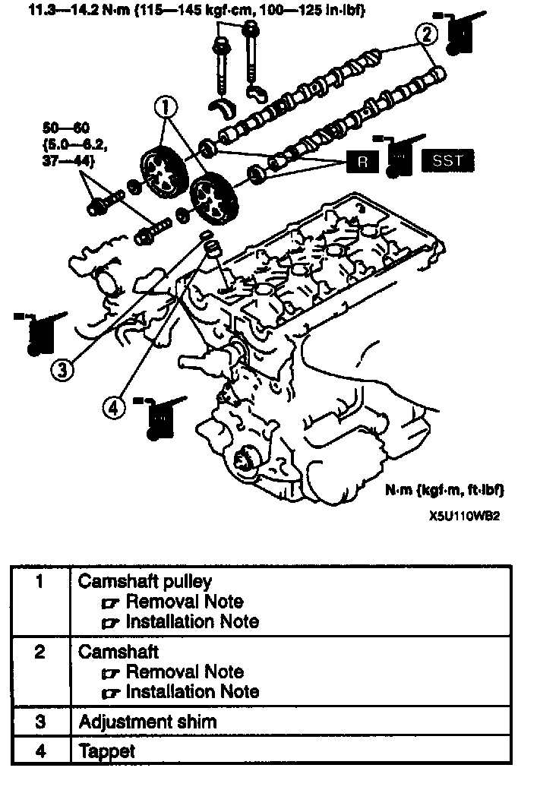
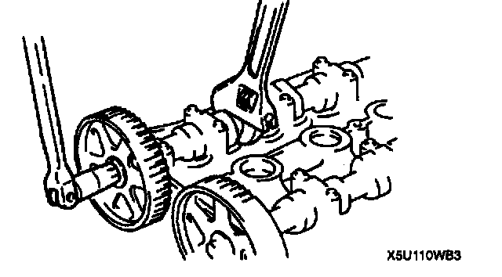
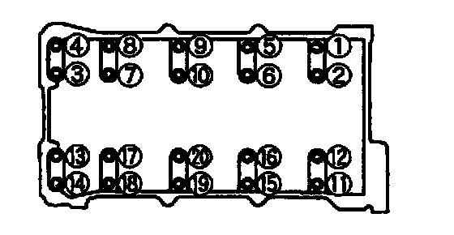
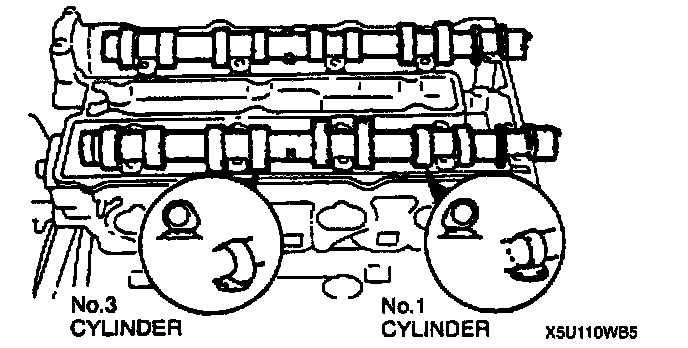
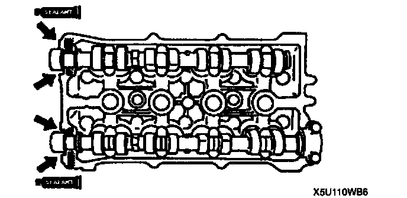
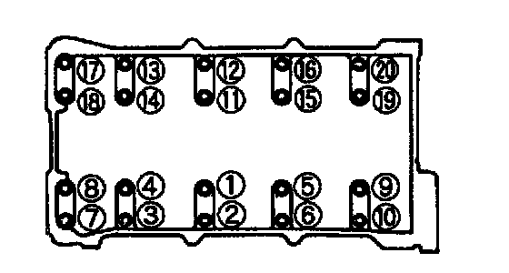
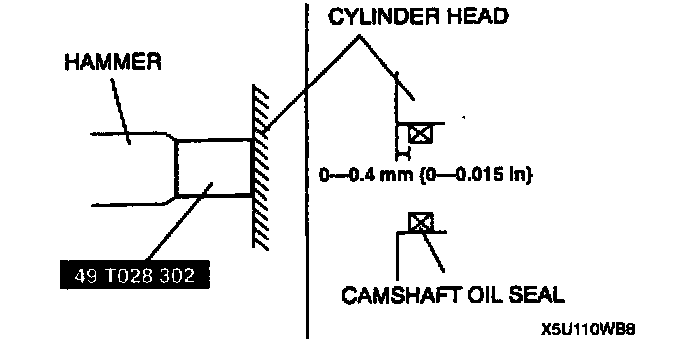
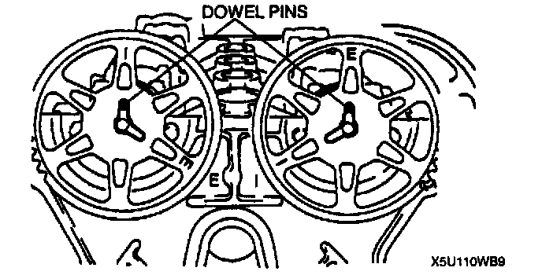
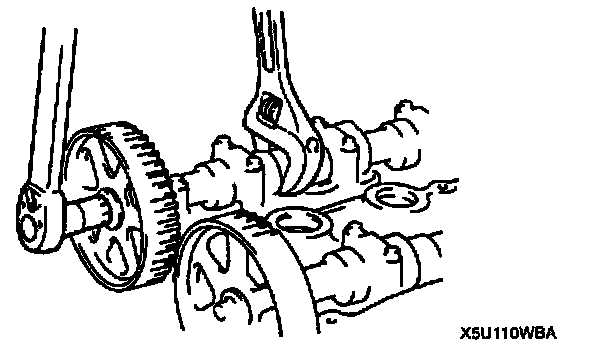

Lifter / Lash Adjuster: Service and Repair

TAPPET AND ADJUSTMENT SHIM REMOVAL/INSTALLATION
1. Remove the timing belt.
2. Remove in the order indicated in the table.
3. Install in the reverse order of removal.
Camshaft Pulley Removal Note

^ Hold the camshaft with a wrench at the cast hexagon, and remove the camshaft pulley lock bolt.
Camshaft Removal Note

1. Loosen the camshaft cap bolts in two or three steps in the order shown.
2. Remove the camshaft caps.
Camshaft Installation Note
Caution:
^ Because there is little camshaft thrust clearance, the camshaft must be held horizontally while it is installed. Otherwise, excessive force will be applied to the thrust area, causing burr on the thrust receiving area of the cylinder head journal. To avoid this, the following procedure must be observed.

1. Assemble camshaft onto the cylinder head, facing the cam noses at No. 1 and No.3 cylinders as shown.

2. Apply silicone sealant to the areas shown. Keep the camshaft sliding surface free of sealant to prevent engine damage.
3. Apply engine oil to the camshaft and the cylinder head journals.
4. Install the camshaft caps to the positions from which they were removed.

5. Tighten the camshaft cap bolts in two or three steps in the order shown.
Tightening torque: 11.3 - 14.2 Nm (115 - 145 kgf.cm, 100 - 125 inch lbs.)
6. Verify that the camshaft settles horizontally when two bearing cap bolts at No.3 journal are tightened.
7. Apply clean engine oil to the camshaft oil seal.
8. Push the oil seal slightly in by hand.

9. Tap the oil seals in evenly by using the Special Service Tool (SST) and a hammer.
Camshaft Pulley Installation Note

1. Turn the camshafts until the camshaft dowel pins face straight up.
2. Install the camshaft pulleys with the I mark (intake side) or the E mark (exhaust side) straight up.

3. Hold the camshaft by using a wrench on the cast hexagon, and tighten the camshaft pulley lock bolt.